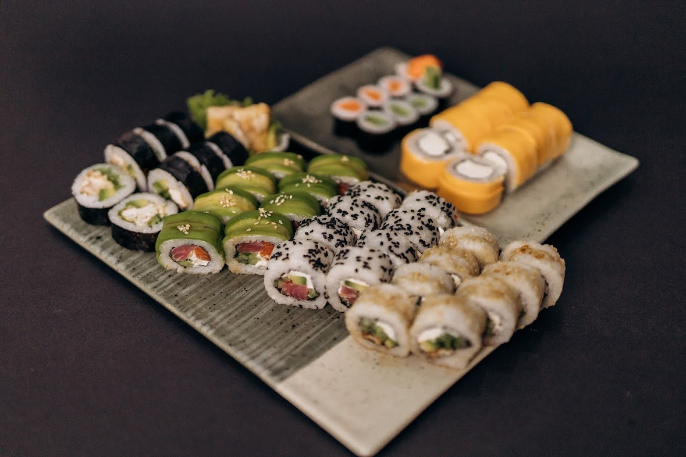

Азійська кухня в Бердичеві
Mizu Sushi — вишукані страви азійської кухні в Бердичеві
Свіжі інгредієнти, традиційні рецепти, легендарні супи Том Ям та Рамен, класичні й гарячі роли, а також смачна локшина удон.

Чому обирають нас
Якість, смак та традиції у кожній страві
Свіжі інгредієнти
Використовуємо лише якісні продукти для приготування наших страв за традиційними рецептами.
Легендарні супи
Скуштуйте справжній Том Ям та Рамен, які зігріють та подарують незабутні гастрономічні емоції.
Швидка доставка
Оперативна доставка улюблених суші та гарячих страв прямо до вашого дому по Бердичеву.